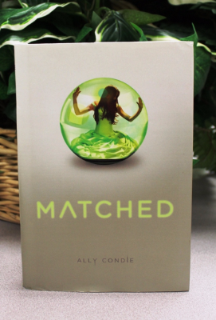

Description:
In Cassia’s Society, every aspect of a person’s life is determined by the Society: where you live, your social status, your profession, who you love, what you do and when you die. Cassia had always believed her Society to be the perfect place to be in, without ever doubting that the Society might just be brainwashing her just like everyone else. On her 17th birthday, Cassia attends the Society’s matchmaking party where many other teenagers her age are matched by the matching screen. Cassia’s match appears to be her best friend, Xander, but the screen flickers to show another person’s face that Cassia knows, Ky. The Society claims her case to be a mistake, but that scenario causes Cassia to begin to question her Society. Watch as Cassia struggles to decide between what she is used to, and what seems to her a mystery and a discovery forcing her to uncover the Society’s deepest secrets! The Society will take away Cassia’s most beloved objects away from her! What would you do if you were in Cassia’s shoes?
